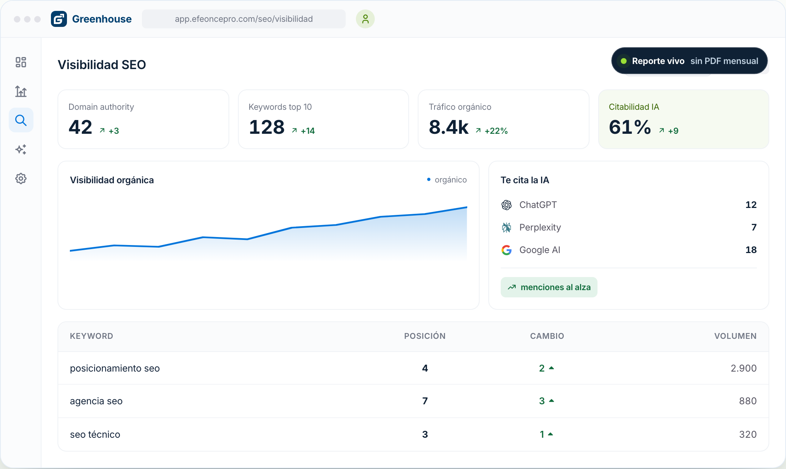

El artefacto
Esto existe. No es una promesa.
Qué es el artefacto y por qué importa para quien lee esta propuesta.
Dónde vive · anclaje verificable

Rótulo obligatorio: qué es exactamente lo que se está viendo.

El artefacto
Qué es el artefacto y por qué importa para quien lee esta propuesta.
Dónde vive · anclaje verificable

Rótulo obligatorio: qué es exactamente lo que se está viendo.